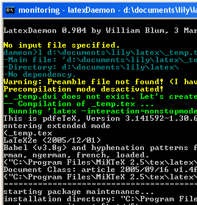

LaTeXDaemon
LaTeXDaemon is a tool that allows you to precompile the preamble of a latex document in order to speed-up the compilation process. It runs a daemon in the background (using no cpu resource) that recompiles the document every time it is notified by windows that the .tex file or the preamble file have been modified. It also computes the MD5 digest of the file in order to avoid recompilation if no real change has been made (for instance when just the date or attributes have changed and the content of the file is unchanged). It has been tested with the Miktex 2.5 distribution.
Download
The latest version can be downloaded  here (zip file).
here (zip file).
Bug report/feature request
You can report bug using the issue tracker.
Sources
Sources are hosted in a SVN repository at Google Code.
Quick documentation
Command line arguments
When you start the daemon with no parameter you access a command prompt. You can get help on the commands that are available by typing 'h' at the prompt.
To get help on the other command line arguments type:latexdaemon.exe --helpTo run the daemon using the pdflatex engine, use the following command line:
latexdaemon.exe --ini=pdflatex
Using LatexDaemon with Latex+dvips
If your your latex document produces Postscript outputs, for instance using the pstricks package, then you may want the daemon to automatically convert the .dvi output into .ps after the .dvi file has been generated. To achieve this you need to use the following options:
latexdaemon.exe --ini=latex --afterjob=dvips
This tells the daemon to launch 'dvips' whenever the latex processing has successfully created the .dvi file. Now if you start Ghostview from the dameon prompt using the 'vs' command then the Ghostview page will be refreshed automatically when the .ps file is updated (without having to manually click on the Ghostview window).
Beamer package
Beamer is a very nice Latex package that provides a document class for generating slides. Since its source code is large it takes quite a while to compile a document which loads this package. This can easily gets annoying especially when you are working on your document and while editing you want to have a quick preview of the slides.
LatexDaemon solves this problem: the preamble being precompiled by LatexDaemon, the compilation of your slides becomes very fast! There is, however, a small incompatibility between the beamer package and the precompilation mode of LatexDaemon (at least under the Miktex 2.5 distribution) that needs to be fixed in order to make things work:
If you are producing your document with latex + dvips then you need to perform the following modification in the file pgfsys-dvips.def from the package pgf (used by beamer) located in 'C:\Program Files\MiKTeX 2.5\tex\generic\pgf\systemlayer'. Line number 18 of this file containing
\def\pgf@sys@postscript@object#1{\special{! #1}}
should be replaced by the following lines:
\ifx\textsuperscript\@undefined
\def\pgf@sys@postscript@object#1{\special{! #1}}
\else
\def\pgf@sys@postscript@object#1{\AtBeginDvi{\special{! #1}}}
\fi
If you are using pdflatex instead of latex then the pdflatex compilation will fail (due a problem with beamer/pgf). Unfortunately I do not know yet how to fix the problem.